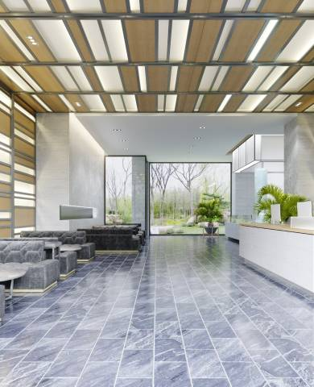

<div class="container" style="background-color: transparent;">
  <h2 class="featuredproject-title">Proyectos Destacados</h2>

  <div style="height: 590px">
    <swiper
    [slidesPerView]="slidesPerView"
      [spaceBetween]="15"
      [navigation]="{
        prevEl: '.swiper-button-prev',
        nextEl: '.swiper-button-next'
      }"
      [pagination]="{ clickable: true }"
      style="padding-bottom: 60px;"
    >
      <ng-template swiperSlide
        ></ng-template>
      <ng-template swiperSlide
        ></ng-template>
      <ng-template swiperSlide
        ></ng-template>
      <ng-template swiperSlide
        ></ng-template>
      <ng-template swiperSlide
        ></ng-template>
    </swiper>
    <div class="swiper-button-prev"><i class="fa-solid fa-angle-left"></i></div>
    <div class="swiper-button-next"><i class="fa-solid fa-angle-right"></i></div>
  
  </div>

  <!--   <br /><br /><br /><br /><br /><br /><br /><br /> -->
</div>
